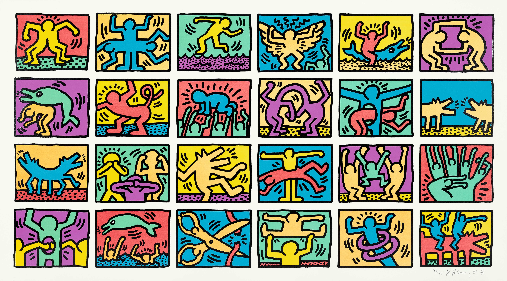
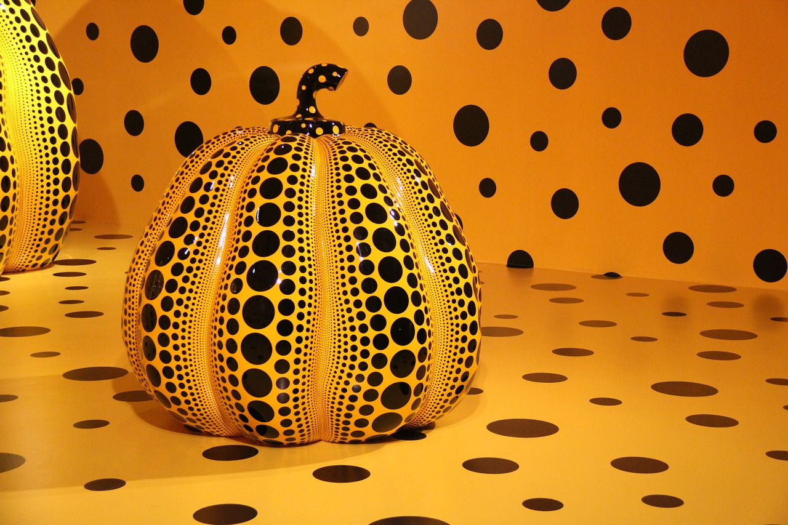
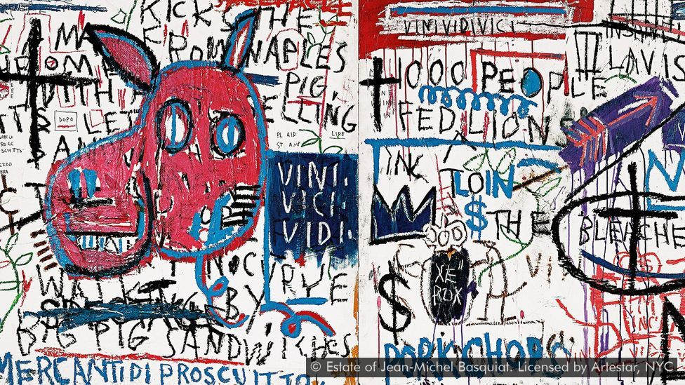
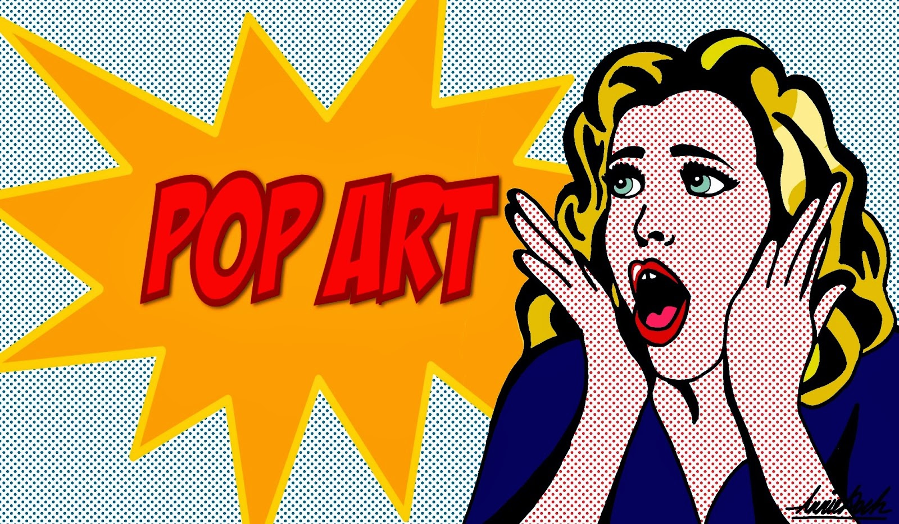

Art - Artists & Styles that I like

Contemporary Artists
Art Styles
Keith Haring
Pop Art
Yayoi Kusama
Japanese Art
Jean Michel Baquiat
Psychedelic Art
Learn more about My top 3 Artists:
Some of the things I love most about art is that with art you do not have to follow the rules. The freeodm to not follow the rules is one of the main reasons I like artists like Keith Haring (famous for this Pop Art grafitti) who used his works of art for social activism. In doing so, he advocated for safe sex and AIDS awareness (and as someone who had AIDS himself), which was a big issue during his time and is today still a big issue. I really like how Haring using his creative freedom to break the stigma around this topic of AIDS and sexuality.
Yayoi Kusama is one of my favorite artists; because she uses her paintings, sculptures, performance art, and pop art/minimalism to bring attention to mental illness. Kusama was diagnosed with OCD (Obsessive Compulsive Disorder), that caused her to suffer from "manic depressive psychosis", which gave her hallucinations. However, Kusama turned her hallucations from OCD into art with her paintings of polka dots and other unique shapes. Because she brings awareness to mental health, crossing the barriers of culture and language, and more with beautiful art pieces and other types of art; Kusama has become one of my favorite artists, and she inspires me to embrace art more.
Basquiat is another one of my favorite painters because of his grafitti like images and his freely mixed motifs from African, Caribbean, Aztec, and Hispanic cultures and mixed “high art” references with images from popular culture and cartoons. Basquiat had an interesting life; he was raised in a middle-class home in Brooklyn and was inspired by his Puerto Rican mother to puruse art. I think his love for his mother and family is an element that shows in his works and passion for art. His mother was diagnosed as mentally ill too and eventually was institutionalized; which caused him to drop out of school, leave home, and pursue a graffiti campaign. Basquiats life is inspiring and uniquie; I believe that not only are his works inspiring, but they are something new and raise awareness to struggle for some youth in America even today.
Background about my top 3 favorite Art Styles:
Pop Art is an art movement that emerged in the mid-1950s in Britain and in the late 1950s in the United States. Pop Art presented a challenge to traditions of fine art by including imagery from popular culture such as advertising and news. In Pop Art, material is sometimes visually removed from its known context, isolated, and/or combined with unrelated material. The concept of Pop Art refers not as much to the art itself as to the attitudes that led to it. Pop Art characterised a sense of optimism during the post war consumer boom of the 1950's and 1960's. It coincided with the globalisation of pop music and youth culture, personified by Elvis and The Beatles.
Pop Art was brash, young and fun and hostile to the artistic establishment. It included different styles of painting and sculpture from various countries, but what they all had in common was an interest in mass-media, mass-production and mass-culture. It is widely interpreted as a reaction to the then-dominant ideas of abstract expressionism, as well as an expansion upon them. And due to its utilisation of found objects and images it is similar to Dada. Pop Art aimed to employ images of popular as opposed to elitist culture in art, emphasizing the banal or kitschy elements of any given culture, most often through the use of irony.
It is also associated with the artists' use of mechanical means of reproduction or rendering techniques. Advertising, product labelling and logos figure prominently in the imagery chosen by pop artists, like in the Campbells Soup cans, by Andy Warhol. Even the labelling on the shipping box containing retail items has been used as subject matter in Pop Art, for example in Warhol's Campbell's Tomato Juice Box 1964, or his Brillo Soap Box sculptures. Andy Warhol is one of the best-known artists associated with Pop Art. His images of Mick Jagger, Marilyn Monroe and Campbell’s Soup cans to name but a few have become household images, reprinted onto t-shirts, posters, mugs and recognised by people across the globe.
Japanese art, the painting, calligraphy, architecture, pottery, sculpture, bronzes, jade carving, and other fine or decorative visual arts produced in Japan over the centuries. Depicting the world through an alternate lens from the Western Renaissance, the introduction of Japanese art and design to Europe brought about revolutions in composition, palette, and perspectival space. Japonism, also often referred to by the French term, japonisme, refers to the incorporation of either iconography or concepts of Japanese art into European art and design. It is important to note that this integration was often based on European notions of Japanese culture as much as authentic influence. Most of the Impressionist and Neo-Impressionist artists, as well as the members of the Aesthetic movement, were deeply influenced by this new approach to representation.
The Nihonga (“Japanese painting”) movement, in which traditional Japanese pigments were used but with a thematic repertoire much expanded. Format was no longer limited to scroll or screen and included occasional Western framed paintings. Shimomura’s portrait of Okakura Kakuzō (The wave portrait above) pays homage to Okakura’s role as a mentor to the movement.
Psychedelic Art generally refers to art that has been influenced by hallucinogenic drugs. However, it may also refer to the art of the 1960s counter-culture movement. Some people relate art that is a visual depiction of kaleidoscopic-like patterns to the Psychedelic Art movement. The movement was closely linked to the psychedelic music of the 1960s as well and was evident in both concert posters and record album covers.
The discovery of LSD and its subsequent popularity as an agent that produces altered states of consciousness was at the core of the Psychedelic Art movement; however, other drugs were also used as a means of inducing certain types of artistic expressions. Various poster artists of San Francisco were responsible for launching the Psychedelic Art movement during the 1960s such as Rick Griffon, Wes Wilson, and Victor Moscoso.
The psychedelic style peaked between 1966 and 1972. Many works, especially evident in concert and event posters, depicted a strong color palette—usually of contrasting colors—along with ornate lettering, and kaleidoscopic swirls. The art of this period also reflected Art Nouveau and Victorian influences. As the movement progressed, many other artists became associated with the artistic style of Psychedelic Art. Some of these artists included Peter Max, Mati Klarwein, Pablo Amaringo, Roger Dean, and Robert Williams. Even the artist Salvador Dali became associated with the Psychedelic Art style. Psychedelic Art usually featured other elements, as well, that became major components of the style. Spirals could often be found in Psychedelic works as well as concentric circles and a repetition of motifs or symbols. Collage is important to the Psychedelic style and many works could also be included in the collage genre. Surrealist subject matter was another major component of the style. Certain exotic motifs like paisley were also at the heart of many Psychedelic works.